Hive¶
Hadoop && Hive¶
Hadoop 2.7.7 编译¶
最开始用Ubuntu20 编译的,问题很多
- protoBuf版本不对
- findbugs 未安装
- CmakeList.txt 文件中需要在cmake_minimum_required(VERSION 2.6 FATAL_ERROR)增加一行
1project(ProjectName) - openssl版本太高（1.1.1->1.0.2）
1make VERBOSE=1
Hadoop 2.10.1 的部署¶
后来想了下，编译个锤子，直接编译好的包
先搞个 本地模式试试看
解压
1 | |
1 | |
1 2 | |
run demo¶
搞一个 words.txt 内容如下
1 2 3 4 | |
1 | |
查看output 目录下生成了两个文件
part-r-00000 和 _SUCCESS
_SUCCESS 说明运行成功了,我们查看 part-r-00000 的输出结果
1 2 3 4 5 6 7 8 | |
Hive 2.1.1 编译和部署¶
用到的版本就是 2.1.1 而且一般都是要通过 JDBC 链接 MySQL 的
Caution：MySQL 巨坑
换了 Ubuntu 不同版本的MySQL都是不同的
1 2 | |
1 | |
1 2 | |
配置 profile
1 2 | |
1 | |
配置 hive 的 xml
1 2 3 | |
1 2 3 4 5 6 7 8 9 10 11 12 13 14 15 16 17 18 19 20 21 22 23 24 25 26 27 28 29 30 31 32 33 34 35 36 37 38 39 40 41 42 43 44 45 46 | |
1 | |
1 2 3 4 5 6 7 8 | |
error2
1 | |
1 2 3 4 5 6 | |
1 | |
这个错误是因为之前你的数据库名字或者表的名字已经存在啦，需要你把之前的删了或者在重新创建一个新的，直接在/conf/hive-site.xml配置文件下面修改，如下图所示，重新定义了一个数据库的名字就可以了 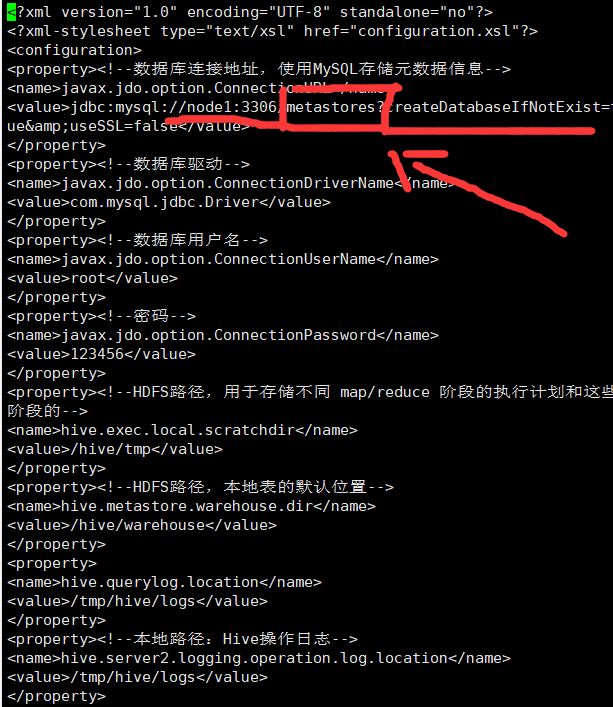
给 MySQL 提权
1 2 | |
初始化hive
1 | |
1 | |
1 | |
1 | |
Hive 架构学习和beeline¶
最近改了一些 service 和 client 的日志方面的东西
发现对编译好的文件，我总是无法体现出我要的效果
啊，发现其实hive是由三种启动模式的。
之前看尚硅谷的课，就没说 我服了。
三种模式 1. 内嵌式 内置的 derby 2. 本地式 一个数据库对应 启动一个metastore 效率低 可有 MySQL 3. remote 同意链接到一个metastore，metastore再处理对应的
我这里主要是要做到 beeline 就是来连接 HiveService2，HiveService2在和metastore通信，metastore负责处理MySQL中的对应关系
Hive 基础理论和语法学习¶
建表语法¶
1 2 3 4 5 6 7 8 9 10 11 | |
- CREATE TABLE 创建一个指定名字的表。如果相同名字的表已经存在，则抛出异常；用户可以用 IF NOT EXISTS 选项来忽略这个异常。
EXTERNAL 关键字可以让用户创建一个外部表，在建表的同时可以指定一个指向实 际数据的路径（LOCATION），在删除表的时候，内部表的元数据和数据会被一起删除，而外部表只删除元数据，不删除数据。- COMMENT：为表和列添加注释。
PARTITIONED BY 创建分区表- CLUSTERED BY 创建分桶表
- SORTED BY 不常用，对桶中的一个或多个列另外排序
ROW FORMAT 行的格式- STORED AS 指定存储文件类型 常用的存储文件类型：SEQUENCEFILE（二进制序列文件）、TEXTFILE（文本）、RCFILE（列式存储格式文件）如果文件数据是纯文本，可以使用STORED AS TEXTFILE。如果数据需要压缩，使用 STORED AS SEQUENCEFILE。
- LOCATION ：指定表在 HDFS 上的存储位置。
- AS：后跟查询语句，根据查询结果创建表。
- LIKE 允许用户复制现有的表结构，但是不复制数据。
管理表¶
当我们删除一个管理表时，Hive 也会删除这个表中数据。管理表不适合和其他工具共享 数据。
外部表¶
因为表是外部表，所以 Hive 并非认为其完全拥有这份数据。删除该表并不会删除掉这 份数据，不过描述表的元数据信息会被删除掉。
两种表相互转换¶
- 查询表的类型
1hive (default)> desc formatted test2;1 2 3 4 5 6 7 8 9 10 11 12 13 14 15 16 17 18 19 20 21 22 23 24 25 26 27 28 29 30 31 32 33 34
OK col_name data_type comment # col_name data_type comment id string # Detailed Table Information Database: db_hive Owner: root CreateTime: Fri May 21 11:29:23 CST 2021 LastAccessTime: UNKNOWN Retention: 0 Location: file:/user/hive/warehouse/db_hive.db/test2 Table Type: EXTERNAL_TABLE Table Parameters: COLUMN_STATS_ACCURATE {\"BASIC_STATS\":\"true\"} EXTERNAL TRUE numFiles 0 numRows 0 rawDataSize 0 totalSize 0 transient_lastDdlTime 1621567763 # Storage Information SerDe Library: org.apache.hadoop.hive.serde2.lazy.LazySimpleSerDe InputFormat: org.apache.hadoop.mapred.TextInputFormat OutputFormat: org.apache.hadoop.hive.ql.io.HiveIgnoreKeyTextOutputFormat Compressed: No Num Buckets: -1 Bucket Columns: [] Sort Columns: [] Storage Desc Params: serialization.format 1 Time taken: 0.351 seconds, Fetched: 31 row(s) - 修改外部表为内部表
1alter table test2 set tblproperties('EXTERNAL'='false'); - 查询表的类型
1hive (default)> desc formatted test2;1 2 3 4 5 6 7 8 9 10 11 12 13 14 15 16 17 18 19 20 21 22 23 24 25 26 27 28 29 30 31 32 33 34 35
OK col_name data_type comment # col_name data_type comment id string # Detailed Table Information Database: db_hive Owner: root CreateTime: Fri May 21 11:29:23 CST 2021 LastAccessTime: UNKNOWN Retention: 0 Location: file:/user/hive/warehouse/db_hive.db/test2 Table Type: MANAGED_TABLE Table Parameters: EXTERNAL false last_modified_by root last_modified_time 1621568343 numFiles 0 numRows 0 rawDataSize 0 totalSize 0 transient_lastDdlTime 1621568343 # Storage Information SerDe Library: org.apache.hadoop.hive.serde2.lazy.LazySimpleSerDe InputFormat: org.apache.hadoop.mapred.TextInputFormat OutputFormat: org.apache.hadoop.hive.ql.io.HiveIgnoreKeyTextOutputFormat Compressed: No Num Buckets: -1 Bucket Columns: [] Sort Columns: [] Storage Desc Params: serialization.format 1 Time taken: 0.109 seconds, Fetched: 32 row(s) - 修改外部表 test2 为内部表 alter table test2 set tblproperties('EXTERNAL'='TRUE');
- 查询表的类型 hive (default)> desc formatted test2;
注意：('EXTERNAL'='TRUE')和('EXTERNAL'='FALSE')为固定写法，区分大小写！
修改表信息¶
重命名表¶
1 | |
1 | |
增加/修改/替换列信息¶
-
更新列
必须同时修改1 2
ALTER TABLE table_name CHANGE [COLUMN] col_old_name col_new_name column_type [COMMENT col_comment] [FIRST|AFTER column_name]类型+列名类型修改前和后可以一样。1alter table test2 change id stu_id string; -
增加或者替换列
1 2
ALTER TABLE table_name ADD|REPLACE COLUMNS (col_name data_type [COMMENT col_comment], ...)1alter table test22 add columns (name string);
ADD 是代表新增一字段，字段位置在所有列后面(partition 列前)，
REPLACE 则是表示替换表中所有字段。
DML¶
Load 语法¶
1 2 | |
1 2 | |
1 2 | |
1 | |
通过 load 会走 MR
Insert 语法¶
- 创建一张表
1 2
hive (default)> create table student_par(id int, name string) row format delimited fields terminated by '\t'; - 基本插入数据
1 2
hive (default)> insert into table student_par values(1,'wangwu'),(2,'zhaoliu'); - 基本模式插入（根据单张表查询结果）
insert into：以追加数据的方式插入到表或分区，原有数据不会删除1 2
hive (default)> insert overwrite table student_par select id, name from student where month='201709';
insert overwrite：会覆盖表中已存在的数据
注意：insert 不支持插入部分字段
As Select¶
根据查询结果创建表（查询的结果会添加到新创建的表中）
不用指定数据类型，直接抄查询的那张表的数据类型
1 2 | |
建表的时候通过 Location 来指定加载路径¶
先上传
1 2 | |
1 2 3 4 5 | |
Insert 导出¶
- 注意有坑
overwrite直接覆写 我导出到 home/user 下直接人没了 - 将查询的结果导出到本地
1 2 3
hive (default)> insert overwrite local directory '/home/spike/stu' select * from student; - 将查询的结果格式化导出到本地
1 2 3 4
hive(default)>insert overwrite local directory '/opt/module/hive/data/export/student1' ROW FORMAT DELIMITED FIELDS TERMINATED BY '\t' select * from student; - 将查询的结果导出到 HDFS 上(没有 local)
1 2 3
hive (default)> insert overwrite directory '/user/atguigu/student2' ROW FORMAT DELIMITED FIELDS TERMINATED BY '\t' select * from student;
Export 导出 HDFS¶
1 2 | |
Import 数据到指定 Hive 表中¶
注意：先用 export 导出后，再将数据导入。
1 2 | |
export 和 import 主要用于两个 Hadoop 平台集群之间 Hive 表迁移。
Truncate¶
1 | |
查询¶
查表基本语法
1 2 3 4 5 6 7 8 9 | |
\t 做分隔符
建表¶
1 2 3 4 5 6 | |
1 2 3 4 5 6 7 8 9 10 | |
1 2 3 4 5 6 7 8 9 10 11 12 13 14 | |
1 2 3 4 | |
导入数据¶
1 2 3 | |
基础查询¶
- 全表查询
2）选择特定列查询1 2 3
hive (default)> select * from emp; hive (default)> select empno,ename,job,mgr,hiredate,sal,comm,deptno from emp ;
注意：1hive (default)> select empno, ename from emp; - SQL 语言大小写不敏感。
- SQL 可以写在一行或者多行
- 关键字不能被缩写也不能分行
- 各子句一般要分行写。
- 使用缩进提高语句的可读性。Linux 里用 tab 会出现提示然后GG。四个空格 ok
别名用法¶
- 重命名一个列
- 便于计算
- 紧跟列名，也可以在列名和别名之间加入关键字‘AS’
查询名称和部门
1 2 3 4 5 6 7 8 9 10 11 12 13 14 15 16 17 18 19 | |
常见函数¶
所有员工的薪水后加 1 显示。
1 | |
- 求总行数（count）
1hive (default)> select count(*) cnt from emp; - 求工资的最大值（max）
1hive (default)> select max(sal) max_sal from emp; - 求工资的最小值（min）
1hive (default)> select min(sal) min_sal from emp; - 求工资的总和（sum）
1hive (default)> select sum(sal) sum_sal from emp; - 求工资的平均值（avg）
1hive (default)> select avg(sal) avg_sal from emp;
SQL 子句顺序¶
- FROM 子句, 组装来自不同数据源的数据
- WHERE 子句, 基于指定的条件对记录进行筛选
- GROUP BY 子句, 将数据划分为多个分组
- 使用聚合函数进行计算
- 使用 HAVING 子句筛选分组
- 计算所有的表达式
- 使用 ORDER BY 对结果集进行排序
标准顺序的 SQL 语句为:1在学生成绩表中 (暂记为 tb_Grade), 把 "考生姓名"内容不为空的记录按照 "考生姓名" 分组, 并且筛选分组结果, 选出 "总成绩" 大于 600 分的.
在上面的示例中 SQL 语句的执行顺序如下:1 2 3 4 5 6
select 考生姓名, max(总成绩) as max总成绩 from tb_Grade where 考生姓名 is not null group by 考生姓名 having max(总成绩) > 600 order by max总成绩 - 首先执行 FROM 子句, 从 tb_Grade 表组装数据源的数据
- 执行 WHERE 子句, 筛选 tb_Grade 表中所有数据不为 NULL 的数据
- 执行 GROUP BY 子句, 把 tb_Grade 表按 "学生姓名" 列进行分组
- 计算 max() 聚集函数, 按 "总成绩" 求出总成绩中最大的一些数值
- 执行 HAVING 子句, 筛选课程的总成绩大于 600 分的.
- 执行 ORDER BY 子句, 把最后的结果按 "Max 成绩" 进行排序.
Limit 语句¶
典型的查询会返回多行数据。LIMIT 子句用于限制返回的行数。
1 | |
Where 语句¶
- 使用 WHERE 子句，将不满足条件的行过滤掉
- WHERE 子句紧随 FROM 子句
- 案例实操
查询出薪水大于 1000 的所有员工
注意：where 子句中不能使用字段别名1hive (default)> select * from emp where sal >1000;
where,from,select的执行顺序，where中的不能用select的别名，因为where的执行顺序在select前面
比较运算符（Between/In/ Is Null）¶
- 查询出薪水等于 5000 的所有员工
1hive (default)> select * from emp where sal =5000; - 查询工资在 500 到 1000 的员工信息
两个闭区间
1hive (default)> select * from emp where sal between 500 and 1000; - 查询 comm 为空的所有员工信息
1hive (default)> select * from emp where comm is null; - 查询工资是 1500 或 5000 的员工信息
两个值，直接写死
1hive (default)> select * from emp where sal IN (1500, 5000);
Like 和 RLike¶
- 使用 LIKE 运算选择类似的值
- 选择条件可以包含字符或数字:
1 2
% 代表零个或多个字符(任意个字符)。 _ 代表一个字符。 - RLIKE 子句
1 2
RLIKE 子句是 Hive 中这个功能的一个扩展，其可以通过 Java 的正则表达式这个更强大 的语言来指定匹配条件。 - 查找名字以 A 开头的员工信息
1hive (default)> select * from emp where ename LIKE 'A%'; - 查找名字中第二个字母为 A 的员工信息
1hive (default)> select * from emp where ename LIKE '_A%'; - 查找名字中带有 A 的员工信息
1hive (default)> select * from emp where ename RLIKE '[A]';
分区表¶
加载静态分区¶
所谓静态分区指的是分区的字段值是由用户在加载数据的时候手动指定的。
语法如下：
1 | |
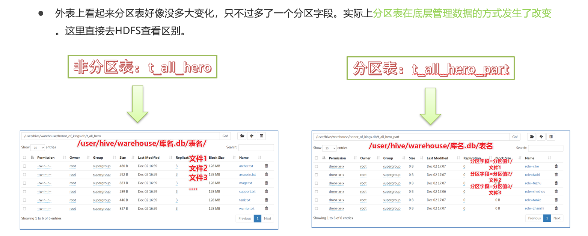
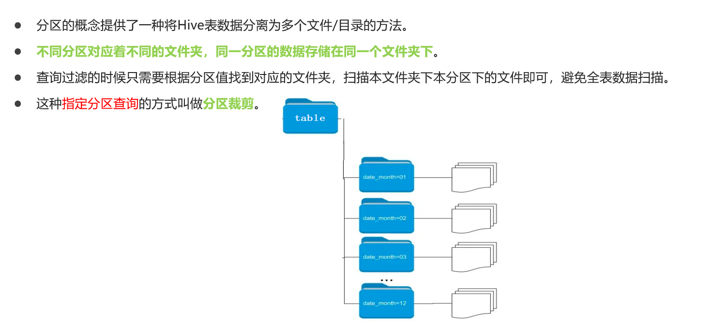
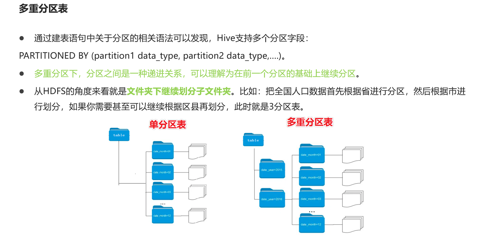
动态分区¶
所谓动态分区指的是分区的字段值是基于查询结果（参数位置）自动推断出来的。核心语法就是insert+select。
启用hive动态分区，需要在hive会话中设置两个参数：
1 2 3 4 | |
动态分区插入时，分区值是根据查询返回字段位置自动推断的。
分区表的注意事项:
- 分区表不是建表的必要语法规则，是一种优化手段表，可选；
- 分区字段不能是表中已有的字段，不能重复；
- 分区字段是虚拟字段，其数据并不存储在底层的文件中；
- 分区字段值的确定来自于用户价值数据手动指定（静态分区）或者根据查询结果位置自动推断（动态分区）
- Hive支持多重分区，也就是说在分区的基础上继续分区，划分更加细粒度
分桶表¶
类似于桶排的意思
分桶表也叫做桶表，叫法源自建表语法中bucket单词，是一种用于优化查询而设计的表类型。
分桶表对应的数据文件在底层会被分解为若干个部分，通俗来说就是被拆分成若干个独立的小文件。
在分桶时，要指定根据哪个字段将数据分为几桶（几个部分）。
Hash然后取模用来分割小文件
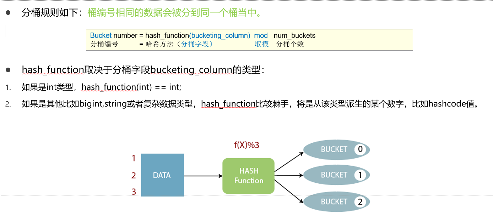
CLUSTERED BY (col_name)表示根据哪个字段进行分；
INTO N BUCKETS表示分为几桶（也就是几个部分）。
需要注意的是，分桶的字段必须是表中已经存在的字段。
1 2 3 4 5 | |
分桶表的好处¶
-
基于分桶字段查询时，减少全表扫描
1 2 3
--基于分桶字段state查询来自于New York州的数据 --不再需要进行全表扫描过滤 --根据分桶的规则hash_function(New York) mod 5计算出分桶编号 --查询指定分桶里面的数据 就可以找出结果 此时是分桶扫描而不是全表扫描 select * from t_usa_covid19_bucket where state="New York"; -
JOIN时可以提高MR程序效率，减少笛卡尔积数量 根据join的字段对表进行分桶操作（比如下图中id是join的字段）
提升效率是在 join 的字段加速
1 | |
当数据量特别大时，对全体数据进行处理存在困难时，抽样就显得尤其重要了。抽样可以从被抽取的数据中估计和推断出整体的特性，是科学实验、质量检验、社会调查普遍采用的一种经济有效的工作和研究方法。
Hive 事务表¶
Hive的核心目标是将已经存在的结构化数据文件映射成为表，然后提供基于表的SQL分析处理，是一款面向分析的工具。且映射的数据通常存储于HDFS上，而HDFS是不支持随机修改文件数据的。
这个定位就意味着在早期的Hive的SQL语法中是没有update，delete操作的，也就没有所谓的事务支持了，因为都是select查询分析操作。
为了解决以下问题
- 流式传输数据。使用如Apache Flume或Apache Kafka之类的工具将数据流式传输到Hadoop集群中。虽然这些工具可以每秒数百行或更多行的速度写入数据，但是Hive只能每隔15分钟到一个小时添加一次分区。频繁添加分区会很快导致表中大量的分区。因此通常使用这些工具将数据流式传输到现有分区中，但是这会使读者感到脏读（也就是说，他们将在开始查询后看到写入的数据），并将许多小文件留在目录中，这将给NameNode带来压力。通过事务功能，同时允许读者获得一致的数据视图并避免过多的文件。
- 尺寸变化缓慢。在典型的星型模式数据仓库中，维度表随时间缓慢变化。例如，零售商将开设新商店，需要将其添加到商店表中，或者现有商店可能会更改其平方英尺或某些其他跟踪的特征。这些更改导致插入单个记录或更新 记录（取决于所选策略）。
- 数据重述。有时发现收集的数据不正确，需要更正。从Hive 0.14开始，可以通过INSERT，UPDATE和 DELETE支持这些用例 。
Hive的设计目标不是为了支持事务操作，而是支持分析操作，且最终基于HDFS的底层存储机制使得文件的增加删除修改操作需要动一些小心思。具体限制如下： 1. 尚不支持BEGIN，COMMIT和ROLLBACK。所有语言操作都是自动提交的。 2. 仅支持ORC文件格式（STORED AS ORC）。 3. 默认情况下事务配置为关闭。需要配置参数开启使用。 4. 表必须是分桶表（Bucketed）才可以使用事务功能。 5. 表参数transactional必须为true； 6. 外部表不能成为ACID表，不允许从非ACID会话读取/写入ACID表。
删除操作： 标记删除，并不是物理删除，然后重新写一个小文件（分桶表特性）
Hive View 视图¶
是虚拟的 把握不住
Hive中的视图（view）是一种虚拟表，只保存定义，不实际存储数据。通常从真实的物理表查询中创建生成视图，也可以从已经存在的视图上创建新视图。
创建视图时，将冻结视图的架构，如果删除或更改基础表，则视图将失败，并且视图不能存储数据，操作数据，只能查询。
概况起来就是：视图是用来简化操作的，它其实是一张虚表，在视图中不缓冲记录，也没有提高查询性能。
好处： 1. 将真实表中特定的列数据提供给用户，保护数据隐式 2. 降低查询的复杂度，优化查询语句
Hive DML语法¶
Load¶
在将数据load加载到表中时，Hive不会进行任何转换。
加载操作是将数据文件移动到与Hive表对应的位置的纯复制/移动操作。
LOCAL参数¶
如果指定了LOCAL， load命令将在本地文件系统中查找文件路径。如果指定了相对路径，它将相对于用户的当前工作目录进行解释。用户也可以为本地文件指定完整的URI-例如：file:///user/hive/project/data1。
如果对HiveServer2服务运行此命令。这里的本地文件系统指的是Hiveserver2服务所在机器的本地Linux文件系统，不是Hive客户端所在的本地文件系统。
如果没有指定LOCAL关键字，如果filepath指向的是一个完整的URI，hive会直接使用这个URI。 否则如果没有指定schema或者authority，Hive会使用在hadoop配置文件中定义的schema 和 authority，即参数fs.default.name指定的（不出意外，都是HDFS）。
Hive 拉链法¶
主要是用来解决数据同步问题
实现方式：
1. 直接覆盖，历史的数据会被覆盖
2. 每次数据变化根据日期郭建一张全量快照。记录了数据的在不同时间的信息，数据冗余过大
3. 构造拉链表。对时间进行打标，实现类似于HashMap的拉链法的操作。

拉链法实现原理
整体实现过程一般分为三步，第一步先增量采集所有新增数据【增加的数据和发生变化的数据】放入一张增量表。第二步创建一张临时表，用于将老的拉链表与增量表进行合并。第三步，最后将临时表的数据覆盖写入拉链表中。例如：
碰到~Hash~冲突，直接链接到尾巴上
当前MySQL中的数据：

当前Hive数据仓库中拉链表的数据：

- 增量采集变化数据，放入增量表中

- 构建临时表，将Hive中的拉链表与临时表的数据进行合并

- 将临时表的数据覆盖写入拉链表中

Hive index¶
老版本有索引 3.0 前
在传统的关系型数据库例如MySQL、Oracle等数据库中，为了提高数据的查询效率，可以为表中的字段单独构建索引，查询时，可以基于字段的索引快速的实现查询、过滤等操作。
Hive中也同样提供了索引的设计，允许用户为字段构建索引，提高数据的查询效率。但是Hive的索引与关系型数据库中的索引并不相同，比如，Hive不支持主键或者外键。Hive索引可以建立在表中的某些列上，以提升一些操作的效率，例如减少MapReduce任务中需要读取的数据块的数量。
在可以预见到分区数据非常庞大的情况下，分桶和索引常常是优于分区的。而分桶由于SMB Join对关联键要求严格，所以并不是总能生效。
注意：官方明确表示，索引功能支持是从Hive0.7版本开始，到Hive3.0不再支持。
Hive中的索引 让我感觉是类似于汇编里面的内存的偏移量的概念
Hive中索引的基本原理：当为某张表的某个字段创建索引时，Hive中会自动创建一张索引表，该表记录了该字段的每个值与数据实际物理位置之间的关系，例如数据所在的HDFS文件地址，以及所在文件中偏移量offset等信息。
Hive的索引目的是提高Hive表指定列的查询速度。没有索引时，类似'WHERE tab1.col1 = 10' 的查询，Hive会加载整张表或分区，然后处理所有的rows，但是如果在字段col1上面存在索引时，那么只会加载和处理文件的一部分。
构建数据时，Hive会根据索引字段的值构建索引信息，将索引信息存储在索引表中
查询数据时，Hive会根据索引字段查询索引表，根据索引表的位置信息读取对应的文件数据。
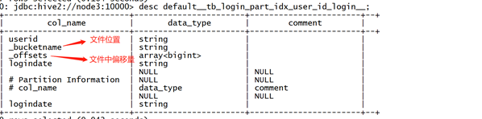
创建索引的是用MR的
Hive构建索引的过程是通过一个MapReduce程序来实现的，这就导致了Hive的一个问题，每次Hive中原始数据表的数据发生更新时，索引表不会自动更新，必须手动执行一个Alter index命令来实现通过MapReduce更新索引表，导致整体性能较差，维护相对繁琐。
实际工作场景中，一般不推荐使用Hive Index，推荐使用ORC文件格式中的索引来代替Hive Index提高查询性能。
分区表 设计¶
Hive的设计思想是通过元数据解析描述将HDFS上的文件映射成表；
基本的查询原理是当用户通过HQL语句对Hive中的表进行复杂数据处理和计算时，默认将其转换为分布式计算MapReduce程序对HDFS中的数据进行读取处理的过程。

当执行查询计划时，Hive会使用表的最后一级目录作为底层处理数据的输入
先根据表名在元数据中进行查询表对应的HDFS目录
可以用 explain 来看命令是周末执行的
分桶表设计¶
默认情况下，Hive底层是通过MapReduce来实现的；
MapReduce在处理数据之间join的时候有两种方式：MapJoin、ReduceJoin，其中MapJoin效率较高；
如果有两张非常大的表要进行Join，底层无法使用MapJoin提高Join的性能，只能走默认的ReduceJoin；
而ReduceJoin必须经过Shuffle过程，相对性能比较差，而且容易产生数据倾斜。
设计思想： 1. 分区表是将数据划分不同的目录进行存储，而分桶表是将数据划分不同的文件进行存储。 2. 分桶表的设计是按照一定的规则【底层通过MapReduce中的多个Reduce来实现】将数据划分到不同的文件中进行存储，构建分桶表。 3. 如果有两张表按照相同的划分规则【比如按照Join的关联字段】将各自的数据进行划分； 4. 在Join时，就可以实现Bucket与Bucket的Join，避免不必要的比较，减少笛卡尔积数量。
Hive 文件存储格式¶
Hive数据存储的本质还是HDFS，所有的数据读写都基于HDFS的文件来实现，为了提高对HDFS文件读写的性能，Hive中提供了多种文件存储格式：TextFile、SequenceFile、RCFile、ORC、Parquet等。不同的文件存储格式具有不同的存储特点，有的可以降低存储空间，有的可以提高查询性能等，可以用来实现不同场景下的数据存储，以提高对于数据文件的读写效率。
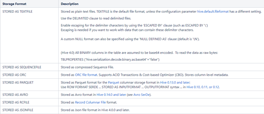
如果要存储为textfile以外的格式，你要通过mr（insert select）来把原始的数据转化为新格式，比如 orc 列式存储
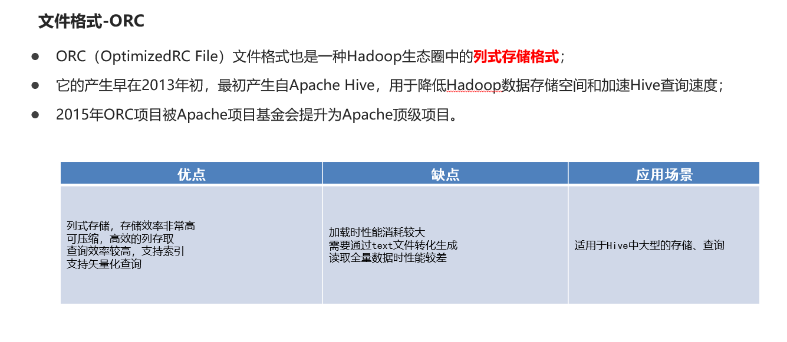
ORC不是一个单纯的列式存储格式，仍然是首先根据行组分割整个表，在每一个行组内进行按列存储。
ORC（OptimizedRC File）文件格式也是一种Hadoop生态圈中的列式存储格式，源自于RC（RecordColumnar File），它的产生早在2013年初，最初产生自Apache Hive，用于降低Hadoop数据存储空间和加速Hive查询速度。它并不是一个单纯的列式存储格式，仍然是首先根据行组分割整个表，在每一个行组内进行按列存储。ORC文件是自描述的，它的元数据使用Protocol Buffers序列化，并且文件中的数据尽可能的压缩以降低存储空间的消耗，目前也被Hive、Spark SQL、Presto等查询引擎支持。2015年ORC项目被Apache项目基金会提升为Apache顶级项目。
ORC文件也是以二进制方式存储的，所以是不可以直接读取，ORC文件也是自解析的，它包含许多的元数据，这些元数据都是同构ProtoBuffer进行序列化的。其中涉及到如下的概念：
ORC文件：保存在文件系统上的普通二进制文件，一个ORC文件中可以包含多个stripe，每一个stripe包含多条记录，这些记录按照列进行独立存储，对应到Parquet中的row group的概念。
文件级元数据：包括文件的描述信息PostScript、文件meta信息（包括整个文件的统计信息）、所有stripe的信息和文件schema信息。
-
stripe：一组行形成一个stripe，每次读取文件是以行组为单位的，一般为HDFS的块大小，保存了每一列的索引和数据。
-
stripe元数据：保存stripe的位置、每一个列的在该stripe的统计信息以及所有的stream类型和位置。
-
row group：索引的最小单位，一个stripe中包含多个row group，默认为10000个值组成。
-
stream：一个stream表示文件中一段有效的数据，包括索引和数据两类。索引stream保存每一个row group的位置和统计信息，数据stream包括多种类型的数据，具体需要哪几种是由该列类型和编码方式决定。
ORC文件中保存了三个层级的统计信息，分别为文件级别、stripe级别和row group级别的，他们都可以用来根据Search ARGuments（谓词下推条件）判断是否可以跳过某些数据，在统计信息中都包含成员数和是否有null值，并且对于不同类型的数据设置一些特定的统计信息。
ORC文件是自描述的，它的元数据使用Protocol Buffers序列化，并且文件中的数据尽可能的压缩以降低存储空间的消耗，目前也被Hive、Spark SQL、Presto等查询引擎支持。
就是通过protobuf序列化了一下 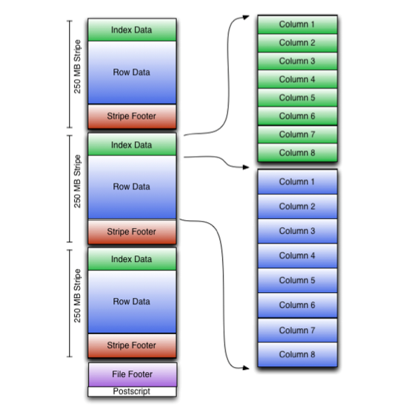
Hive 文件压缩算法¶
Hive底层转换HQL运行MapReduce程序时，磁盘I/O操作、网络数据传输、shuffle和merge要花大量的时间，尤其是数据规模很大和工作负载密集的情况下，鉴于磁盘I/O和网络带宽是Hadoop的宝贵资源，数据压缩对于节省资源、最小化磁盘I/O和网络传输非常有帮助。如果磁盘I/O和网络带宽影响了MapReduce作业性能，在任意MapReduce阶段启用压缩都可以改善端到端处理时间并减少I/O和网络流量。
压缩的优点 1. 减小文件存储所占空间 2. 加快文件传输效率，从而提高系统的处理速度 3. 降低IO读写的次数
压缩的缺点 1. 使用数据时需要先对文件解压，加重CPU负荷，压缩算法越复杂，解压时间越长
一般的压缩算法是hadoop内置的压缩算法
要想在Hive中使用压缩，需要对MapReduce和Hive进行相应的配置
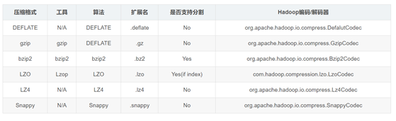
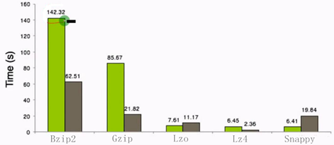